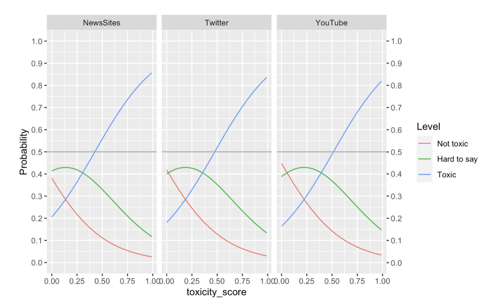

Human-centered evaluation of a toxicity-detection model
pythonml-evalnlphci
TL;DR
Where a toxicity classifier's judgments diverge from how people actually read harm — and what that gap means for deploying it.
Role
Lead Researcher
Output
Paper
Year
2023
Motivation
Standard toxicity benchmarks score against fixed labels. But "harm" is read differently across people and contexts — so a model that's accurate on the benchmark can still misjudge in the wild. This work evaluates a toxicity-detection model (Perspective) on human terms.
Study Design
The main objective was to conduct a human-centered evaluation by directly comparing the toxicity model's ratings to human judgements of toxicity (crowdsourced).
We also
Tested how model and human judgments of toxicity varied on news-based comments from different online platforms (News sites, YouTube News Channels, and Twitter News handles)
Collected human judgements of whether the comments were respectful in tone, written in formal language, and contained stereotypes to test for latent attributes in model's judgement of toxicity,
thus conducting a sociotechnical, human-centered evaluation of the toxicity-detection model.
Methods
Human toxicity judgments were collected on an ordinal scale and ordinal logistic regression was used to analyze human judgments (dependent variable) against the model scores and the source platform (dependent variables)
Key Findings
For high toxicity scores, the model strongly aligns with human ratings of toxicity and disrespectfulness across all three platforms, providing evidence of its transferability

Figure 1: Probability of how human toxicity ratings correspond to model's toxicity scores for news-related comments from news websites, YouTube, and Twitter. As the toxicity score increases (x axis),the probability that a participant would have rated the comment as toxic also increases (y axis).
However, high toxicity scores from the model is also a strong predictor of humans rating the comment as informal and as containing stereotypes, indicating that the model conflates informal comments and comments containing stereotypes as toxicity.
Uncovering the presence of latent attributes allows us to explore further questions about whether the model considers some stereotypes more toxic than others and at a more fundamental level, whether those attributes are desirable behavior in the first place!
Interestingly, human ratings of informal/formal speech did not affect their toxicity ratings, i.e., their ratings of formality had no bearing on ratings of toxicity
Based on Figure 1, we can conclude that the model can be put to use for automatic detection of toxic comments rather than detection of non-toxic comments. Even when model's toxicity scores are low, the probability that the human would rate it as non-toxic is less than 50%.
Challenges & Takeaways
The first challenge was collecting reliable toxicity ratings. When using 3-point Likert scales or 10-point numeric scales, human raters tended to gravitate toward the middle option — akin to the Goldilocks effect. We therefore had to design a data collection mechanism that encouraged more deliberate judgements. Check out the paper to see how we used a comment and rating as an anchor to elicit more relative judgements and, in turn, higher quality data.
How do you analyze ordered data? Many studies apply linear regression, but toxicity judgements are ordinal — the gap between "not toxic" and "hard to say" is not the same as the gap between "hard to say" and "toxic." To account for this, we applied ordinal logistic regression. To keep results accessible to UX and product professionals, we used predicted probabilities and visualizations rather than odds ratios to examine human–AI alignment.
We restricted our dataset to news comments to hold the topic constant — otherwise, platform differences could be attributed to comment subject matter rather than inherent linguistic differences across platforms. This is also a limitation, however. We observe reasonable transferability, likely because all comments share the same news-themed context.